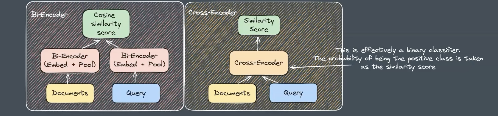

# %pip install -U sentence-transformers
# %pip install wikipedia-api
# %pip install claudette
# %pip install ollama
# !ollama pull deepseek-r1:1.5bSimple RAG Example
Retreival Augmented Generation
Thank you Ben Clavié for getting me started on this path.
https://parlance-labs.com/education/rag/ben.html
- RAG is Retreival Augmented Generation.
- It just means ‘provide relevant context’
- It works by
- creating an embedding from a prompt
- creating embeddings from sections of a document
- finding the cosine similarity between the prompt and each section of the document.
- providing those most relevant sections of the document to a generative model to generate an answer.
-Once the paragraph with the hightest cosine similarity to the prompt is found, the top 3 sentences are fed into a generative model to generate an answer.
from sentence_transformers import SentenceTransformer
from wikipediaapi import Wikipedia
from claudette import Chat, models
import re
import ollama
import numpy as npI got the model list from here https://www.sbert.net/docs/sentence_transformer/pretrained_models.html
For a github repo it might be better to choose a code model.
model = SentenceTransformer('Alibaba-NLP/gte-base-en-v1.5', trust_remote_code=True)modelSentenceTransformer(
(0): Transformer({'max_seq_length': 8192, 'do_lower_case': False}) with Transformer model: NewModel
(1): Pooling({'word_embedding_dimension': 768, 'pooling_mode_cls_token': True, 'pooling_mode_mean_tokens': False, 'pooling_mode_max_tokens': False, 'pooling_mode_mean_sqrt_len_tokens': False, 'pooling_mode_weightedmean_tokens': False, 'pooling_mode_lasttoken': False, 'include_prompt': True})
)Fetch some text content and embed it
!lsRAG.ipynb cross-encoder.png example-repo.txt rag-tree.webp# wiki = Wikipedia('RAGBot/0.0', 'en')
# doc = wiki.page('Albert Einstein').text
# load a local text file
with open('example-repo.txt', 'r') as file:
doc = file.read()
lines = doc.split('\n')Choose which chunks to split the document into
- I chose to split the document into lines at the newline character.
- Other options would be paragraphs.
- For a repo, I’m choosing to split the document into n overlapping chunks, because otherwise a function might be split in two and not make sense.
n_lines = len(doc.split("\n"))
n_chunks = 50
window_size = n_lines // n_chunks
window_size885# combine the sets of lines into chunks of text.
chunks = [lines[i:i+window_size] for i in range(0, n_lines, window_size)]
shift = window_size // 2
chunks_shift = [lines[i+shift:i+window_size+shift] for i in range(0, n_lines, window_size)]
chunks = chunks + chunks_shift# ... make embedding
docs_embed = model.encode(chunks, normalize_embeddings=True)IndexError: list index out of rangewiki.page('Albert Einstein').text[:100]'Albert Einstein (14 March 1879 – 18 April 1955) was a German-born theoretical physicist who is best 'The embedding has 768 dimensions.
Here’s an example of one of the embeddings - it is from the fourth line of the input text.
Only the first 10 dimensions are shown for brevity, but the semantic content of line 4 is represented by the combination of all 768 dimensions.
docs_embed[4].shape, docs_embed[4][:10]((768,),
array([ 0.01500533, 0.00550891, 0.04666482, 0.02964193, 0.03918857,
-0.00510483, -0.04217818, -0.03604467, -0.00913893, -0.0241353 ],
dtype=float32))Make an embedding of the prompt (query)
The query is also 768 dimensional since we used the same sentence transformer to create the embeddings.
query = "What were the circumstances which led Einstein to meet his fellow neuroanatomist Ramon?"
query_embed = model.encode(query, normalize_embeddings=True)
query_embed.shape(768,)Each dimension in an embedding can be thought of as a direction in semantic space.
If the dimensions of the prompt and a given line are different, then the dimensions won’t point in the same direction, and the resulting dot product will be small. If many of the dimensions line up, the dot product will be larger. By picking the line with the largest dot product, we are picking the line that is most similar to the prompt.
Calculating the dot product of all the line embeddings with the query embedding gives a similarity score between each line and the query. Again, just the first three similarities are shown for brevity, but there are acutally 308 similarities since there were 308 lines in the input text.
similarities = np.dot(docs_embed, query_embed)
print(f"first 4 similarities: {similarities[:4]} \nindex of maximum similarity: {similarities.argmax()} \nwhich is: {similarities.max()}")first 4 similarities: [0.50982666 0.49827662 0.43293458 0.44298065]
index of maximum similarity: 55
which is: 0.6418374180793762But maybe there are other parts of the text which also contain relevant information. That’s a good reason to choose the top n similar lines and not just the first.
top_3_idx = np.argsort(similarities)[::-1][:3]
top_3_idxarray([55, 67, 42])most_similar_documents = [lines[idx] for idx in top_3_idx]most_similar_documents["Einstein's decision to tour the eastern hemisphere in 1922 meant that he was unable to go to Stockholm in the December of that year to participate in the Nobel prize ceremony. His place at the traditional Nobel banquet was taken by a German diplomat, who gave a speech praising him not only as a physicist but also as a campaigner for peace. A two-week visit to Spain that he undertook in 1923 saw him collecting another award, a membership of the Spanish Academy of Sciences signified by a diploma handed to him by King Alfonso XIII. (His Spanish trip also gave him a chance to meet a fellow Nobel laureate, the neuroanatomist Santiago Ramón y Cajal.)",
"Einstein next traveled to California, where he met Caltech president and Nobel laureate Robert A. Millikan. His friendship with Millikan was awkward, as Millikan had a penchant for patriotic militarism, where Einstein was a pronounced pacifist. During an address to Caltech's students, Einstein noted that science was often inclined to do more harm than good.",
'In the spring of 1913, two German visitors, Max Planck and Walther Nernst, called upon Einstein in Zurich in the hope of persuading him to relocate to Berlin. They offered him membership of the Prussian Academy of Sciences, the directorship of the planned Kaiser Wilhelm Institute for Physics and a chair at the Humboldt University of Berlin that would allow him to pursue his research supported by a professorial salary but with no teaching duties to burden him. Their invitation was all the more appealing to him because Berlin happened to be the home of his latest girlfriend, Elsa Löwenthal. He duly joined the Academy on 24 July 1913, and moved into an apartment in the Berlin district of Dahlem on 1 April 1914. He was installed in his Humboldt University position shortly thereafter.']llm = models[2]
chat = Chat(llm, sp=f"Here is some information from Wikipedia, it will help you to answer a question. Wikipedia information: {str(most_similar_documents)}")
chat(query)According to the information provided, Einstein’s 1923 visit to Spain gave him a chance to meet the fellow Nobel laureate, the neuroanatomist Santiago Ramón y Cajal. The passage states:
“A two-week visit to Spain that he undertook in 1923 saw him collecting another award, a membership of the Spanish Academy of Sciences signified by a diploma handed to him by King Alfonso XIII. (His Spanish trip also gave him a chance to meet a fellow Nobel laureate, the neuroanatomist Santiago Ramón y Cajal.)”
So the circumstances that led Einstein to meet the neuroanatomist Ramón y Cajal were Einstein’s 1923 visit to Spain, where he was awarded membership in the Spanish Academy of Sciences and had the opportunity to meet the fellow Nobel laureate Ramón y Cajal.
- id:
msg_01XxsjqvB1hPUzxEWTS7hyKB - content:
[{'text': 'According to the information provided, Einstein\'s 1923 visit to Spain gave him a chance to meet the fellow Nobel laureate, the neuroanatomist Santiago Ramón y Cajal. The passage states:\n\n"A two-week visit to Spain that he undertook in 1923 saw him collecting another award, a membership of the Spanish Academy of Sciences signified by a diploma handed to him by King Alfonso XIII. (His Spanish trip also gave him a chance to meet a fellow Nobel laureate, the neuroanatomist Santiago Ramón y Cajal.)"\n\nSo the circumstances that led Einstein to meet the neuroanatomist Ramón y Cajal were Einstein\'s 1923 visit to Spain, where he was awarded membership in the Spanish Academy of Sciences and had the opportunity to meet the fellow Nobel laureate Ramón y Cajal.', 'type': 'text'}] - model:
claude-3-haiku-20240307 - role:
assistant - stop_reason:
end_turn - stop_sequence:
None - type:
message - usage:
{'cache_creation_input_tokens': 0, 'cache_read_input_tokens': 0, 'input_tokens': 465, 'output_tokens': 187}
Improvements
Cross Encoder - The method described above uses a Bi-encoder model. It is very efficient, since the embeddings for the document can be computed in parallel, and stored in a database, so that in the end all that you need to look up is the similarity between the prompt embedding and the embeddings stored in a database. The documents and query representations are computed entirely separately in the bi-encoder, so they aren’t aware of each other.
- Improvements can be made by using a Cross-encoder model. These essentially are a binary classifier, where p(positive class) is taken as the similarity score. These are slower than bi-encoders, but are more accurate.

Reranking Cross encoders are computationally expensive to run, so using a cross-encoder on the entire set of documents, for every prompt, would take a long time. One solution is to return a shortlist of documents using a computationally efficient approach, such as a bi-encoder, and then re-rank these by using a cross-encoder. There’s a library for this - github.com/answerdotai/rerankers
Keyword Search: always have keyword search and full text search in the pipeline.
tf-idf: term frequency-inverse document frequency weighs down common words and weighs up rare words.
BM25 is a way to implement tf-idf.
Running DeepSeek locally without sending data to the cloud
There are plenty of cases where querying a third party server might give away sensitive information.
Since DeepSeek was released it has become much easier to run this process locally. You’ll just need to install ollama and then pull the relevant deepseek model, then you can query the LLM without even needing the internet.
llm = 'deepseek-r1:1.5b'
chat = ollama.chat(model=llm, messages=[{'role': 'user', 'content': f"Here is some information from Wikipedia, it will help you to answer a question. Wikipedia information: {str(most_similar_documents)}" + query}])
answer = (chat['message']['content'])
# remove the reasoning part leaving just deepseek's answer
cleaned_text = re.sub(r'<think>.*?</think>', '', answer, flags=re.DOTALL)
cleaned_text.strip()'Einstein met Santiago Ramón y Cajal during his two-week visit to Spain in 1923. This was part of his scientific endeavors and provided him with an opportunity to meet another Nobel laureate from the same country.\n\n**Answer:** Einstein met Santiago Ramón y Cajal during his visit to Spain in 1923, where he collected a science award and had an opportunity to meet another Nobel laureate.'